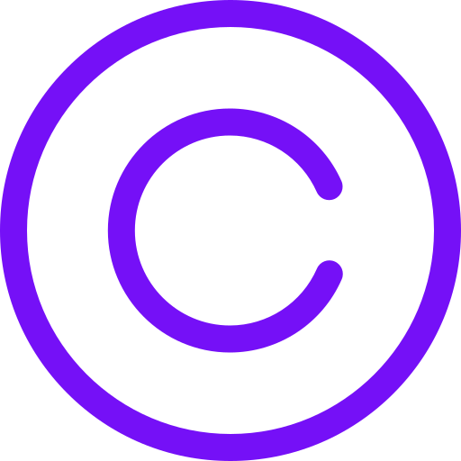

Designer, Front-end Developer & Mentor
I design and code beautifully simple things, and I love what I do.

I design and code beautifully simple things, and I love what I do.
{{ motivationLetter }}
impasse de roscariou
Locunolé
Objet : demander pour rentrer dans colbert
Madame, Monsieur,
Présentation: Je m'appelle Clovis Sanceo, j'ai 15 ans. Je voudrai rentrer dans votre lycée car j'adore tout ce qui touche a la technologie y compris la fabrication de projets qui permette de surporter les personne dans leur tache cotidienne mais ce qui me fait le plus kiffer c'est le faite de coder l'objet technologique. J'aimerai rentrée chez vous car lors de mon mini stage chez vous j'ai pus comfirmer mon choix de venir chez vous car vous proposer des options très interessantes comme l'option robotix que j'ai decouvert lors de votre video sur Youtube. Mes Projets: J'ai réalisé plusieur projets : réalisation d'un site web de test (https://fundex-27fc5.web.app/), ce site a été réaliser par moi avec de mon grand frère. Ce site avait pour but de m'apprendre certaine base dans le code. Un mini mario a été créer sur Scratch 2, des réalisation 3D PLA et résine, des réalisation sur arduino Pour voir toute mes réalisation vous pouvez allé voir ce site web qui a été réalisé par mes soins (https://portfolio-beb88.web.app/). les remerciment: Dans l’attente de vous rencontrer prochainement, pour pouvoir vous exprimer ma pleine motivation, je vous prie de croire, Madame, Monsieur, à l’expression de mes salutations distinguées. Clovis Sanceo